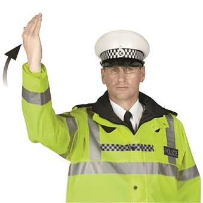

Loading...

Police: Proceed for traffic from the front
👮 Police Signals
📖 Description
A hand‑waving gesture from the police officer indicates that vehicles approaching from the front may move forward or pass by. Drivers must proceed carefully and follow the officer’s exact motion.